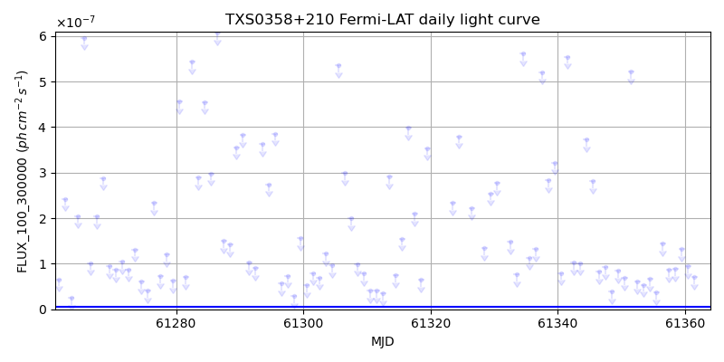
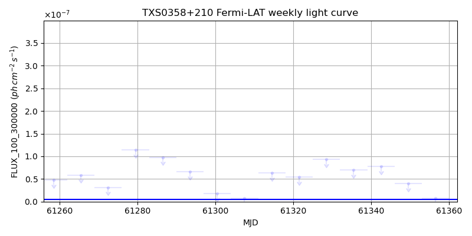

LAT Lightcurve site: https://fermi.gsfc.nasa.gov/ssc/data/access/lat/msl_lc/source/TXS_0358p210
NED: Query
Time of last update of this page: UT: 2026-11-20 16:14 (MJD: 61364.677)
| Property | Value |
|---|---|
| R.A. | 4:01:45.12 |
| Dec. | 21:10:30.0 |
| z | 0.834 |
| 3FGL SpectrumType | PowerLaw |
| 3FGL PL Index | 2.35 |
| 3FGL Flux_100_300000 | 1.12e-08 1 / (s cm2) |
| 3FGL Flux_1000_300000 | 4.97e-10 1 / (s cm2) |
| 3FGL Flux >200 GeV | 3.85e-13 1 / (s cm2) |
| 3FGL Extrap. Crab >200 GeV | 0.00 |
| 3FGL Flux After EBL Absorption >200GeV | 1.24e-14 1 / (s cm2) |
| 3FGL EBL Crab Fraction >200GeV | 0.00 |

| MJD | dMJD | Flux | dFlux | Frac3FGL | FracCrab>200GeV | EBLFracCrab>200GeV |
|---|---|---|---|---|---|---|
| 61357.50 | 0.50 | 8.62e-08 | 0.00e+00 | 0.00 | 0.00 | 0.00 |
| 61358.50 | 0.50 | 8.87e-08 | 0.00e+00 | 0.00 | 0.00 | 0.00 |
| 61359.50 | 0.50 | 1.33e-07 | 0.00e+00 | 0.00 | 0.00 | 0.00 |
| 61360.50 | 0.50 | 9.41e-08 | 0.00e+00 | 0.00 | 0.00 | 0.00 |
| 61361.50 | 0.50 | 7.08e-08 | 0.00e+00 | 0.00 | 0.00 | 0.00 |

| MJD | dMJD | Flux | dFlux | Frac3FGL | FracCrab>200GeV | EBLFracCrab>200GeV |
|---|---|---|---|---|---|---|
| 61328.50 | 3.50 | 9.29e-08 | 0.00e+00 | 0.00 | 0.00 | 0.00 |
| 61335.50 | 3.50 | 6.97e-08 | 0.00e+00 | 0.00 | 0.00 | 0.00 |
| 61342.50 | 3.50 | 7.76e-08 | 0.00e+00 | 0.00 | 0.00 | 0.00 |
| 61349.50 | 3.50 | 3.99e-08 | 0.00e+00 | 0.00 | 0.00 | 0.00 |
| 61356.50 | 3.50 | 6.90e-09 | 0.00e+00 | 0.00 | 0.00 | 0.00 |
| MJD | dMJD | Flux | dFlux | Frac3FGL | FracCrab>200GeV | EBLFracCrab>200GeV |
|---|---|---|---|---|---|---|
| 61357.50 | 0.50 | 1.97e-08 | 0.00e+00 | 0.00 | 0.00 | 0.00 |
| 61358.50 | 0.50 | 1.87e-08 | 0.00e+00 | 0.00 | 0.00 | 0.00 |
| 61359.50 | 0.50 | 2.19e-08 | 0.00e+00 | 0.00 | 0.00 | 0.00 |
| 61360.50 | 0.50 | 2.00e-08 | 0.00e+00 | 0.00 | 0.00 | 0.00 |
| 61361.50 | 0.50 | 2.30e-08 | 0.00e+00 | 0.00 | 0.00 | 0.00 |

| MJD | dMJD | Flux | dFlux | Frac3FGL | FracCrab>200GeV | EBLFracCrab>200GeV |
|---|---|---|---|---|---|---|
| 61328.50 | 3.50 | 1.75e-08 | 0.00e+00 | 0.00 | 0.00 | 0.00 |
| 61335.50 | 3.50 | 8.95e-09 | 0.00e+00 | 0.00 | 0.00 | 0.00 |
| 61342.50 | 3.50 | 5.76e-09 | 0.00e+00 | 0.00 | 0.00 | 0.00 |
| 61349.50 | 3.50 | 3.47e-09 | 0.00e+00 | 0.00 | 0.00 | 0.00 |
| 61356.50 | 3.50 | 2.62e-09 | 0.00e+00 | 0.00 | 0.00 | 0.00 |
--------------------------------------------------------- Using user-supplied coords: 4:01:45.12 21:10:30.0 2000 --------------------------------------------------------- FLWO UT night of: 2026-11-21 Local Sid. @ Midnight: 03:37 Sunset (-15.0) (local, UT): 18:33 01:33 Sunrise (-15.0) (local, UT): 05:47 12:47 Moonrise (local, UT): Moonset (local, UT): 03:40 10:40 Moon phase: 0.85 --------------------------------------------------------- AzTime LSID UT Obj_el Obj_az Mn_el Mn_az Sep. --------------------------------------------------------- 18:33 22:09 01:33 12.2 72.4 47.9 117.4 51.7 19:03 22:39 02:03 18.3 75.8 53.3 125.0 51.5 19:33 23:09 02:33 24.6 79.2 58.2 134.7 51.3 20:03 23:39 03:03 30.9 82.7 62.3 146.9 51.1 20:33 00:09 03:33 37.2 86.2 65.1 162.1 50.9 21:03 00:39 04:03 43.6 90.0 66.3 179.7 50.7 21:33 01:09 04:33 50.0 94.2 65.4 197.5 50.6 22:03 01:39 05:03 56.4 99.1 62.9 213.2 50.4 22:33 02:09 05:33 62.6 105.4 59.0 225.9 50.2 23:03 02:39 06:03 68.7 114.1 54.2 235.9 50.0 23:33 03:09 06:33 74.2 127.9 48.9 243.9 49.8 00:03 03:39 07:03 78.3 152.0 43.2 250.4 49.6 00:33 04:10 07:33 79.5 188.6 37.3 255.9 49.4 01:03 04:40 08:03 76.7 220.5 31.2 260.7 49.2 01:33 05:10 08:33 71.8 239.1 25.1 265.1 48.9 02:03 05:40 09:03 66.0 250.2 19.0 269.2 48.7 02:33 06:10 09:33 59.9 257.6 12.9 273.0 48.4 03:03 06:40 10:03 53.6 263.2 6.8 276.9 48.1 03:33 07:10 10:33 47.2 267.8 1.0 280.7 47.9 04:03 07:40 11:03 40.8 271.7 -4.9 284.7 47.6 04:33 08:10 11:33 34.4 275.4 -11.1 288.8 47.3 05:03 08:40 12:03 28.1 278.9 -16.8 293.2 46.9 05:33 09:10 12:33 21.8 282.3 -22.3 298.1 46.6 05:47 09:25 12:47 18.8 283.9 -24.8 300.5 46.4 --------------------------------------------------------- Dark hours >55 deg.: 0.00